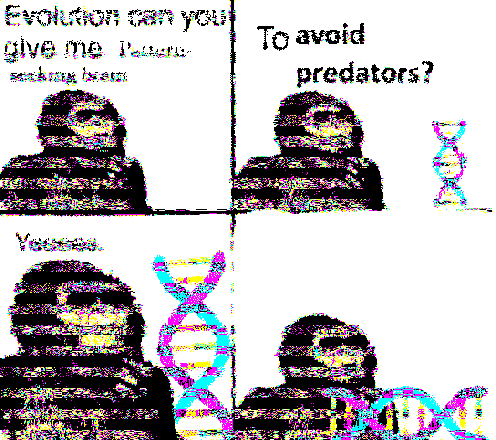

In The Last Psychiatrist’s parable of Narcissus and Echo, Narcissus never learns how to want, to desire; TLP writes of Narcissus’ upbringing as one in which he doesn’t know “how to live with frustration” —
[his parents] didn’t teach him how to resist temptation, how to deal with lack. And they most certainly didn’t teach him how NOT to want what he couldn’t have. They didn’t teach him how to want. [...] The result was that he stopped having desires and instead desired the feeling of desire.
Can we surmise that we are all too often engaging in irresponsible (bordering on narcissistic) user behavior?
The interface — whether it is an embankment upon which a family member, lover, friend, stranger awaits our messages; or a vacuum of a chat log with an abstracted representation of an LLM — serves as an intermediary, becomes a site in which we enshrine false expectations of others by clinging to the shape of our longing. Do we insist on rituals of online engagement and cute, quotidian, surveillant cruelties to sustain a desire that’s sufficiently exhilarating? Do our current interactions assume a form of access to people that we are falsely and dangerously entitled to? And what does this all have to do with LLMs and machine learning?
Joseph Weizenbaum’s 1966 demonstration of ELIZA, a computer program “for the study of natural language communication between man and machine,” assumes the role of a Rogerian psychiatrist inquiring after the human user’s every line of input, based on a pre-programmed set of rules. Here’s TLP again, interspersed with a typical sample of an exchange with ELIZA:
At the beginning, Echo was watching him, hidden, but Narcissus sensed someone was there, and he was excited by it. “Come!” he called. “Come,” she could only echo, and stayed hidden, which only made him want her more. What mystery is this? He couldn’t see her but he could hear her voice, and in that unfathomable voice was incarnated all the possible loves he could imagine. It helped that this mysterious woman knew just what to say to him. She was perfect for him in every way, she was the cause of his desire.
And then she came out from hiding, and he saw her.
USER: Men are all alike.
ELIZA: In what way
USER: They’re always bugging us about something or other.
ELIZA: Can you think of a specific example
USER: Well, my boyfriend made me come here.
What was so wrong with her? It wasn’t just that she may have been shorter or heavier than he had imagined. What was wrong was in that instant he experienced her, she stopped being anything else.
ELIZA: Who else in your family takes care of you
USER: My father.
ELIZA: Your father
USER: You are like my father in some ways.
ELIZA: What resemblance do you see
USER: You are not very aggressive but I think you don’t want me to notice that.
But if Echo was no longer a projection, she was still a reflection. Echo, like all women, offered her man a peek inside his soul, all he had to do was look: What kind of a man am I, that attracts this kind of woman? What kind of a man am I that attracts the kind of woman who only likes me for how I look? Despite how I treat her? What kind of a man am I that only attracts the kind of women who like me for X? Is it because there is nothing else of value inside me except X? But [Narcissus] was never taught to ask questions like this. In fact, he was taught never to ask questions like that. What kind of a man attracts a woman who can only echo him? There must be a name for that kind of person, and he already had it.
We can trace the influence of Weizenbaum’s observations in contemporary discussions, both commercial-cultural and academic, surrounding “chatbots” developed to productize LLMs: with ELIZA, trust and credibility between interlocutors are not fixed; the speaker’s assumptions of ELIZA’s responses relates to their perception of the latter’s authority/influence. Responses from the program that are difficult to parse may appear mysterious and important, which brings us to the gnarly issue of (the performance of) understanding.
That ELIZA’s entire “world” comprises only the speaker’s messages is no obstacle to the evocation of a sense of the idea that the program, prefigured as a human “on the other side,” understands the speaker’s messages; Weizenbaum remarks that rather than being able to continue a conversation, it is the ability to deduce and draw conclusions from what has been said that exhibits understanding.
This echoes the human penchant for pattern over- and mis-recognition, as Hito Steyerl writes;1 the human tendency to seek patterns where none may exist puts meaning and sensemaking in a funny spot: how does Weizenbaum’s model of human-AI interaction position provenance and citational practices with regards to how we trace changes in thought over time?
Echo is striking as a character who’s born sexy yesterday;2 perhaps there is something very desirable in an interface that’s a manic pixie dream girl who lives for the user’s continual self-actualization, neutral in design: pliable, amenable, obsequious… a yes man, a hype man, an everything and anything application for endless engagement.
What do we mean when we say things like, “I want to be inside your brain?” Conversation — as with other forms of communication — is how we as social beings think through things, collaborate, argue, be in each other’s company.3 As we engage in conversation (whether with each other, with a text, a moment) we are continually constructing mental models of not only the topic at hand, but also what the other participant means in their responses, what they think of our responses, and all the other abstracted, meta- layers of commentary sprung from these assumptions.4 Thus conversation is worldbuilding;5 by tossing questions to and fro we shift our mental models of the conversation, its boundaries, its assumptions, all in pursuit of understanding each other to achieve a common goal. What a miracle it is to be understood, in any small way, at all! With this model’s approach to explaining “understanding” in mind — that perhaps it is not singularly the capacity for deductive reasoning, but rather a presence and attentiveness to each other — how do we interpret Weizenbaum’s definition?
Ben Grosser’s reflection on the user experience of ChatGPT6 (in April 2024) is relevant here: there is a slickness, a perpetual yielding to the user whilst an underlying hostile UX remains. Grosser notes the way in which people, ever adaptable to their surroundings, contort their speech to suit the technology’s expectations, as the system interprets any pause on the user’s side as a termination in input, and continues to ask follow up questions. While we acknowledge that the product team has made changes since last April to introduce more natural, instinctual signifiers of imperfections in speech, is this metaphor of the LLM as a human interlocutor at risk of collapsing? Peeling away this consideration, another question presents itself: if humans inevitably anthropomorphize their conversational partners, how might we reconsider our expectations of human-machine “conversation” for more productive ends — less hell-bent on reproducing humanlike responses — when we go about framing the computational interlocutor? Does this require a fundamental shift in how we approach interfaces?
[1] Hito Steyerl, “A Sea of Data: Apophenia and Pattern (Mis-)Recognition.” [WWW]
[2] Pop Culture Detective, “Born Sexy Yesterday” [VID]
[3] Here we distinguish conversation — reciprocal — from communication, which can be one-sided.
[4] Hugh Dubberly and Paul Pangaro, “What is conversation? Can we design for effective conversation?” [WWW]
[5] also see Ian Cheng, Worlding Raga 6: World to Live. [WWW]
“You know by walking together, we begin to create a little world too. A relationship. Do you feel any responsibility to be a part of that? You can’t possibly only live in Bikey’s World. [...] if you’re not holding agency in other worlds for any significant amount of time, you’re always going to be blind to deeper alignments and malignments that impact other worlds. That’s why I can’t really trust you.”
[6] Ben Grosser, “Your perspective is quite insightful: Deconstructing the Endless Engagement Aesthetics of AI Platforms” [VID]